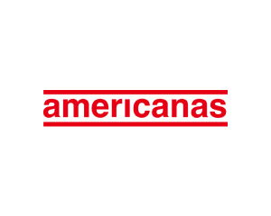
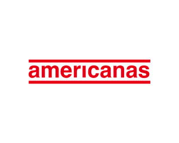

O que é uma Startup?
Startup é uma empresa jovem com um modelo de
negócios repetível e escalável, em um cenário de
incertezas e soluções a serem desenvolvidas. Embora não
se limite apenas a negócios digitais, uma startup necessita
de inovação para não ser considerada uma empresa de
modelo tradicional.
De fato, startup é um termo que está
na moda e empreender virou o sonho de muita gente,
tanto no Brasil quanto fora dele. Um erro comum que
permeia a definição de startups é se elas são somente
empresas de internet. Não necessariamente, elas só são mais frequentes na Internet porque é bem mais barato e facilmente propagável criar uma empresa online do que uma de agronegócio, por exemplo.

 
